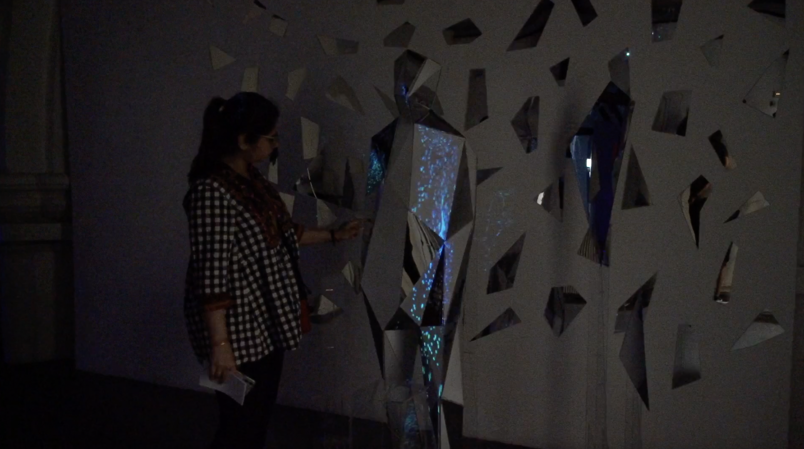
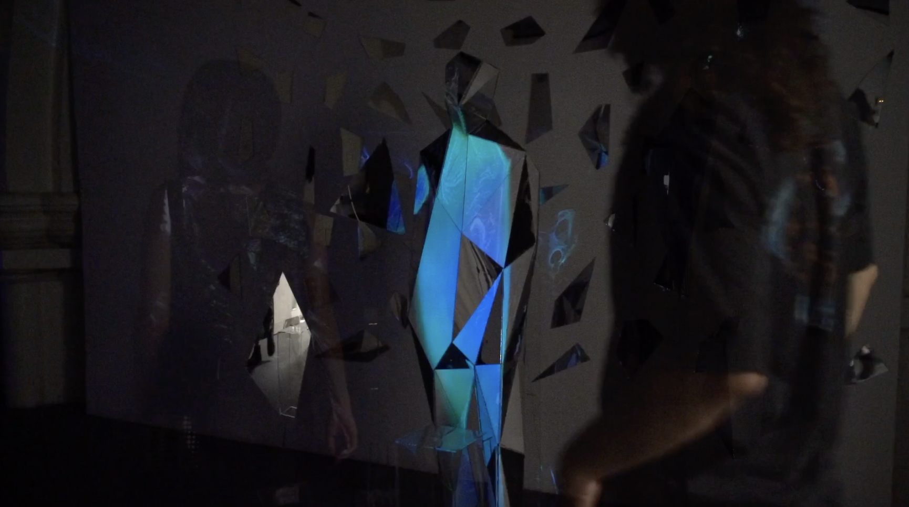
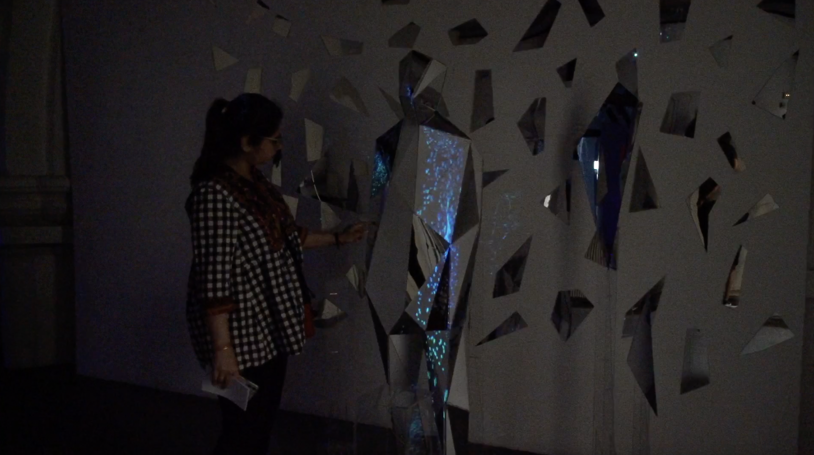
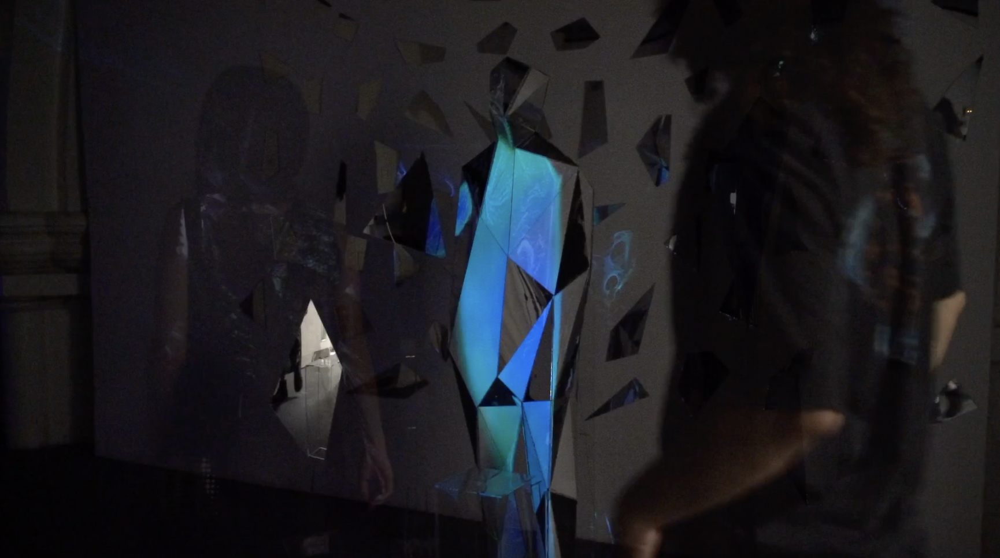

Video from this Vimeo Learn Resource
Introduction
Transitory Echoes is an interactive projection installation that integrates human sculpture with sensor technology and is rooted in Buddhist philosophy. The mapping patterns shift as visitors approach, embodying the Buddhist notion that all beings have unique 'colors' or forms. In contrast, mirrored surfaces surround the sculpture, reflecting the ever-changing projections. This symbolizes the 'emptiness' inherent in the impermanent nature of existence.
Transitory Echoes is not just an installation; it's an immersive experience that urges viewers to contemplate the transience of forms and the evanescent beauty of impermanence.
Detailed Images

 


